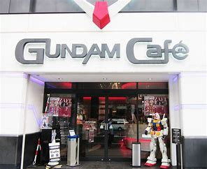
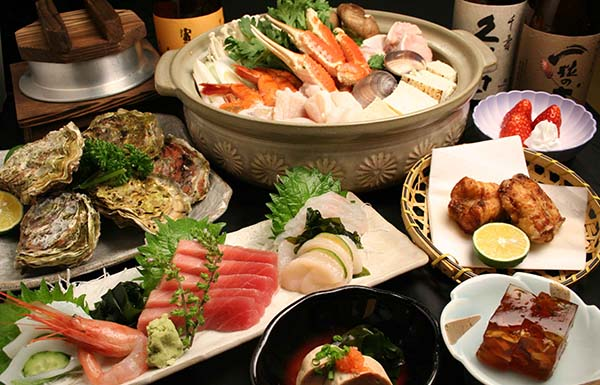

La Nourriture
Cafes, plat
A cote du AKB48 Shop et cafe il y a une queue interminable devant le Gundam cafe. Tout deux à tester, pour nos petits fans ; attention, interdiction de prendre des photos et les consommations sont assez cheres : cafe 500 yens, au minimum. Neanmoins le personnel est serviable et il y a une bonne ambiance. N'oublions pas les Maid cafe ! Cherchez une dame habillee comme dans un anime et vous en trouverez un... ou huit.
Pour les restaurants, ayez toujours de l'espece sur vous et evitez les heures d'affluences.  Goutez les specialites japonaises, les differents types de sushi -pas les meme que chez nous- Chirashizushi, les sashimi ou les Nigiri-zushi. Si vous mangez des soba, faites du bruit car c'est synonyme d'appreciation ou encore du Dojo Nabe (bouillon avec du poisson). This kind of food qui vous replonge dans l'epoque d'Edo. Tellement de chose a tester ! Surtout; mangez local : Monjayaki a la viande, aux fruits de mer..-en parlant de fruit de mer- le Fukagawa meshi (riz aux palourdes). Le poisson, les legumes et la viande de boeuf, porc.. incontournable -y'en a partout- Comme le tsukudani (melange de poissons) ; le Fukujinzuku (variete de legumes). Enjoy, regalez vous !